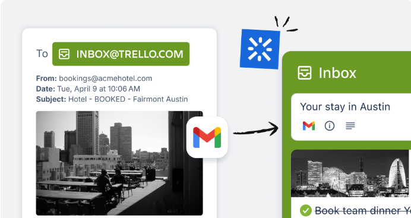
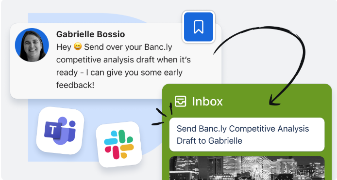

Capturez, organisez et traitez vos tâches à fraire où que vous souyez
Oubliez l'encombrement et le chaos. Libérez votre productivité grâce à Trello.
En saisissant mon adresse e-mail, j'accepte la politique de confidentialité d'Atlassian
Initiation à Trello
Votre centre de productivité
Restez organisé et efficace grâce à la boîte de réception, aux
tableaux et au planificateur. Chaque tâche à faire, chaque idée ou
chaque responsabilité, aussi insignifiante soit-elle, y trouve sa
place, et vous restez au top de votre productivité.
(PROCHAINEMENT UN CARROUSEL )

LA MAGIE OPÈRE AUSSI DANS LES E-MAILS
Transformez facilement vos
e-mails en tâches à faire ! Il vous
suffit de les transférer vers votre
boîte de réception Trello.
Atlassian Intelligence (AI) les
transformera en tâches organisées contenant tous les
liens dont vous avez besoin.
UNE APPLICATION DE MESSAGERIE VRAIMENT MAGIQUE
Vous devez assurer le suivi d'un
message sur Slack ou
Microsoft Teams? Envoyez-le
directement dans votre tableau Trello!
L'interface de votre application préférée vous
permet d'enregistrer les
messages qui apparaissent
dans votre boîte de réception Trello, avec des
résumés et des liens générés par Atlassian Intelligence.
